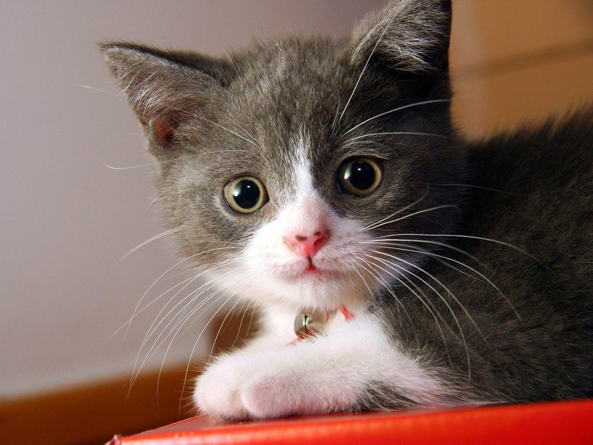
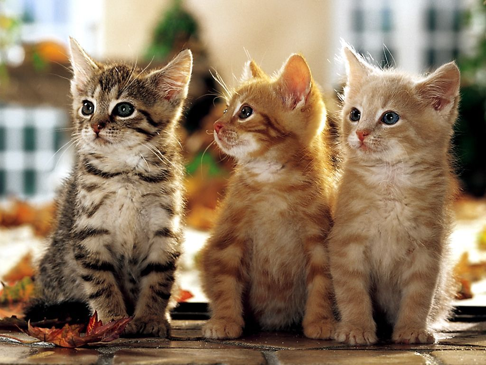
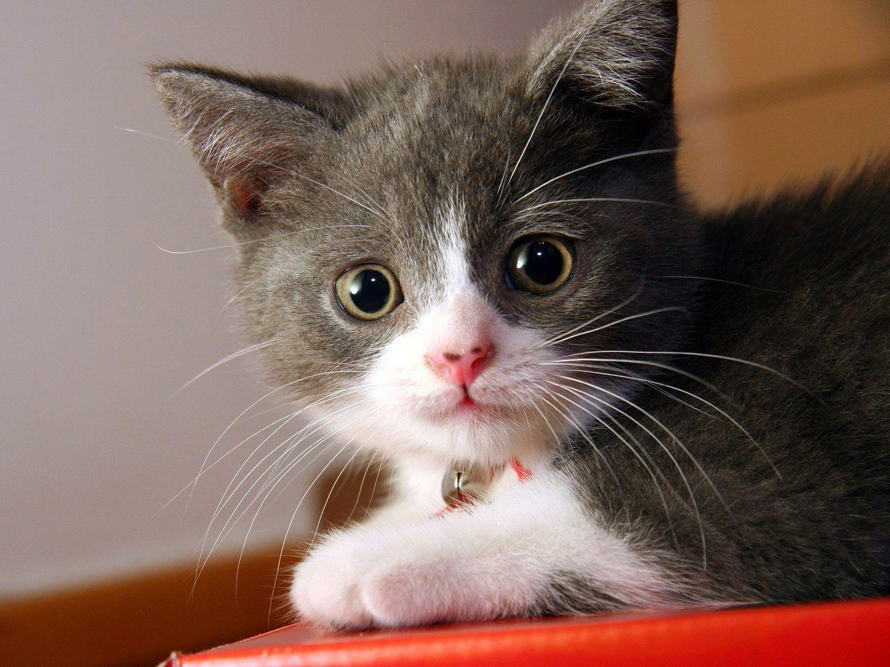
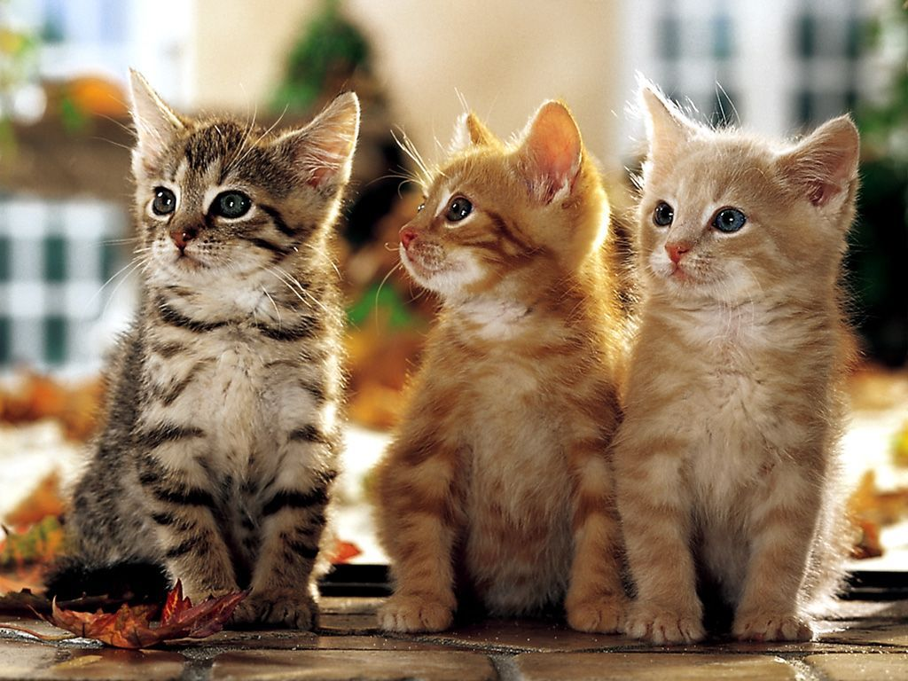

Le Monde Fascinant des Chatons
Galerie de Photos de Chatons
 



Conseils de Soins pour Chatons
Les chatons nécessitent une attention particulière pour leur alimentation, leur santé, et leur bien-être. Il est important de les nourrir avec une alimentation équilibrée, de les emmener régulièrement chez le vétérinaire, et de leur fournir un environnement de jeu sécurisé.
Histoires de Chatons
Connaissez-vous l'histoire de Mimi, le chaton qui a appris à ouvrir les portes ? Ou celle de Leo, le chaton qui adorait l'eau ? Chaque chaton a sa propre personnalité et ses propres aventures à raconter.
Informations sur les Chatons
Les chatons communiquent de manière complexe, utilisant à la fois des miaulements et des mouvements corporels pour exprimer leurs émotions. Saviez-vous que les chatons commencent à ronronner dès l'âge de deux jours ?